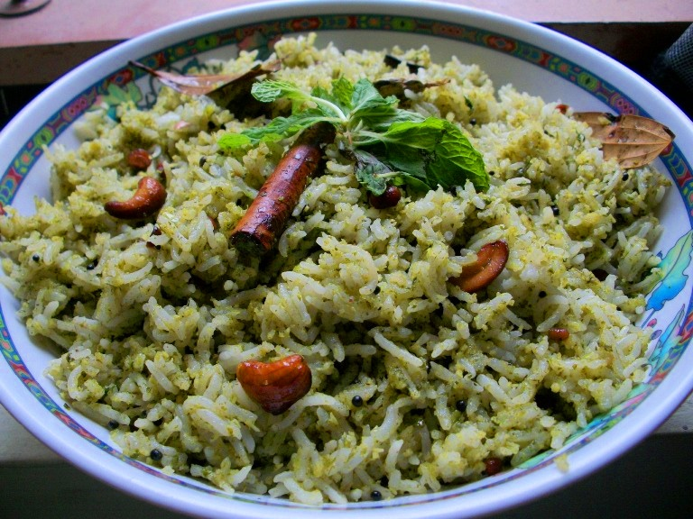

- Recipes
- Rice&Pasta
MINT RICE
Ingredients :
Basmati rice or raw rice - 1 cup
Onion - 2
Green chilli - 2
Ginger - 1 inch piece
Mint leaves - 1 medium sized bunch
Fresh lemon juice -1 tbsp or juice of half a small lemon
Fresh peas - fistful
Wash mint leaves and grind it to a fine paste along with half an onion, 1-2 green chilli and a small piece of ginger adding very less water.Soak basmati rice for 20 minutes, drain and keep it aside.Heat oil in a pan, add the ingredients mentioned under seasoning, saute for a few seconds, then add thinly sliced onions and saute till onions turn pink.Add the ground paste and saute till the raw flavor of the mint paste goes. If you have fresh peas with you, then you can add a handful of fresh peas now. Add drained rice, salt needed (for 1 cup rice it is approximately 2 tsp flat salt), juice of half a lemon, and 1 3/4 cup of water.Transfer it to another container (in case if you have done it in kadai)and pressure cook for 3 whistles and switch off.In case if you are doing it directly in the pressure cooker/ pan as shown above, pressure cook for 1 whistle and simmer for another 5-6 minutes. Switch off and open the cooker once the pressure subsides.
PASTA

Ingredients :
Pasta-1 cup
Onion-1
Tomato-1, large
Garlic-1 tblsp
Red chilli powder-1 tsp
chopped carrot, peas-1/4 cup
Chopped capsicum-1/4 cup
Turmeric powder -1/4 tsp
Kasoori methi-A pinch
Any Italian seasoning-1/2 tsp
Chopped coriander leaves-2 tblsp
Salt As needed
Boil 4 cups water and add the pasta, required salt. Cook for 10- 12 mins or as per the package instructions.Drain in a metal strainer, once the pasta is done. reserve 1/4 cup water drained for later use. Boil water and keep the tomato immersed for a minute. Water should be really hot. Or you can also boil for a minute with the tomato.Take out the tomato, run through cold water, peel off the skin. Grind coarsely.Heat a kadai with oil and temper with jeera. Do not let it burn, so do it in medium flame. Add garlic and give it a stir for half a minute.Add finely chopped onion and fry until transparent. Add the vegetables. Add required salt and fry for 2 minutes in medium flame. Add pureed tomato, red chilli, garam masala, turmeric powders, kasoori methi, italian seasoning.Fry until the oil separates. May take a couple of minutes in medium flame. Add chopped capsicum lastly and fry for a minute.